What
Cognitive objects
What should be transparent?
- Intent (Goals)
- Beliefs (World Model)
- Plans (Action Sequences)
- Memory/State
- Tool I/O
- Policies
- Outcomes
A Survey of Interpretability, Explainability, and Governance
Abstract
Agentic AI systems—LLM-based agents with planning, memory, and tool use—introduce transparency challenges that are poorly served by explainability methods designed for single-step predictions. This article surveys and synthesizes interpretability and explainability techniques relevant to agentic behavior across the agent lifecycle.
We organize this survey using a five-axis taxonomy that categorizes prior work by (i) cognitive objects being inspected, (ii) assurance objectives being targeted, (iii) mechanisms employed, (iv) lifecycle stages, and (v) stakeholders served.
The transparency gap
Market projections show agentic deployment outpacing XAI tooling by about 6× by 2034. arXiv publication growth for agentic AI also outpaces XAI from 2022 to 2025. More than 90% of enterprises report interest on a three-year horizon, 23% are piloting, only 2% had deployed at scale by early 2025, and 15% report having XAI infrastructure. Work that combines agentic systems with transparency, safety, or governance appears in this survey’s references only from 2024. Banking, healthcare, and government face the strongest transparency requirements.
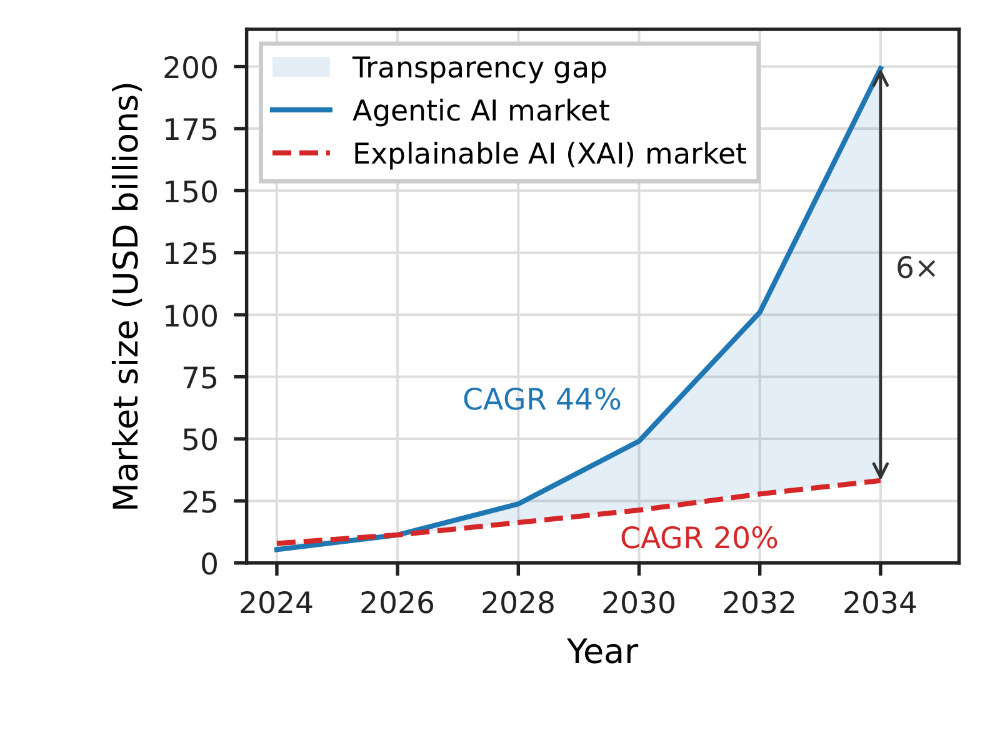
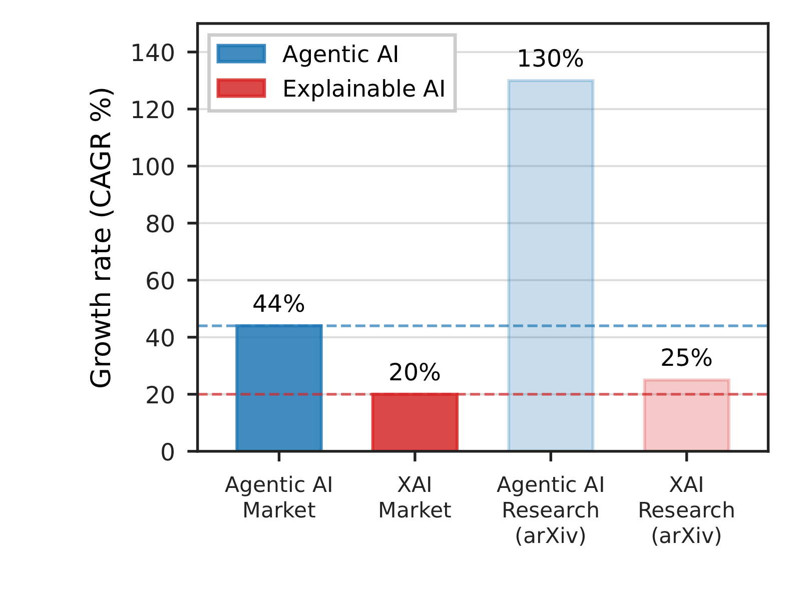
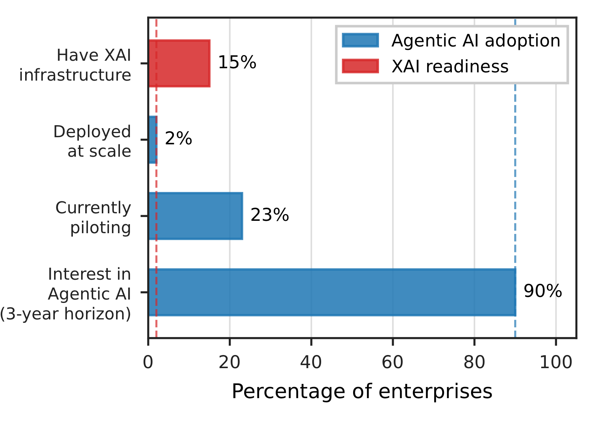
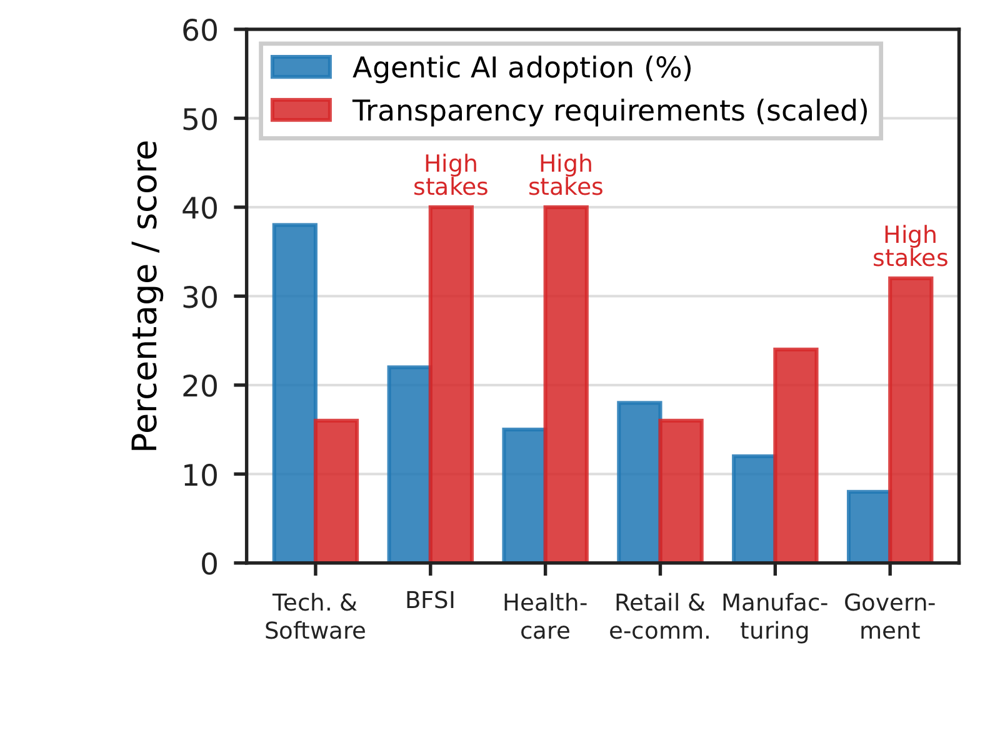
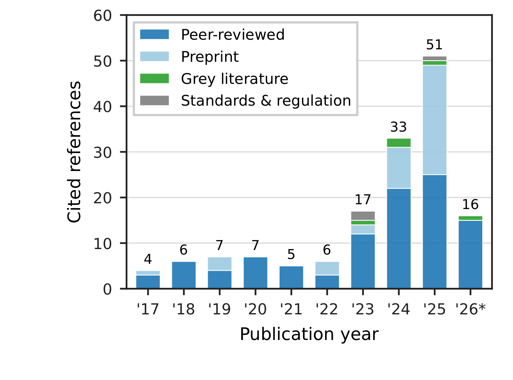
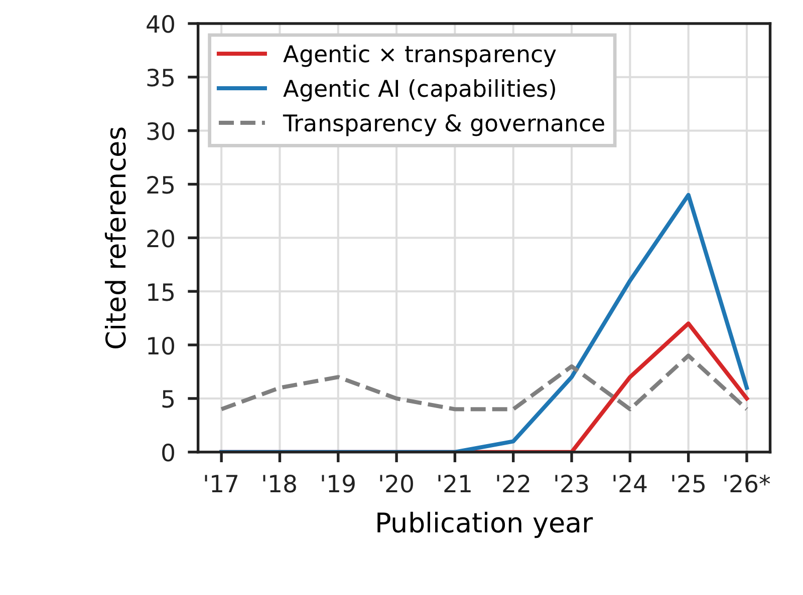
Figure 2. The transparency gap across market size, research growth, enterprise adoption, sector requirements, and the references cited in this survey.
Literature positioning
Prior surveys fall into two strands: XAI and interpretability surveys focused on static or single-step models, and Agentic AI surveys that cover architectures, planning, tools, and memory while treating transparency as secondary.
This survey differs in three ways: a five-axis taxonomy tied to lifecycle stages and stakeholder views, a shared trace those views derive from, and the Minimal Explanation Packet as a per-decision, outcome-time artifact.
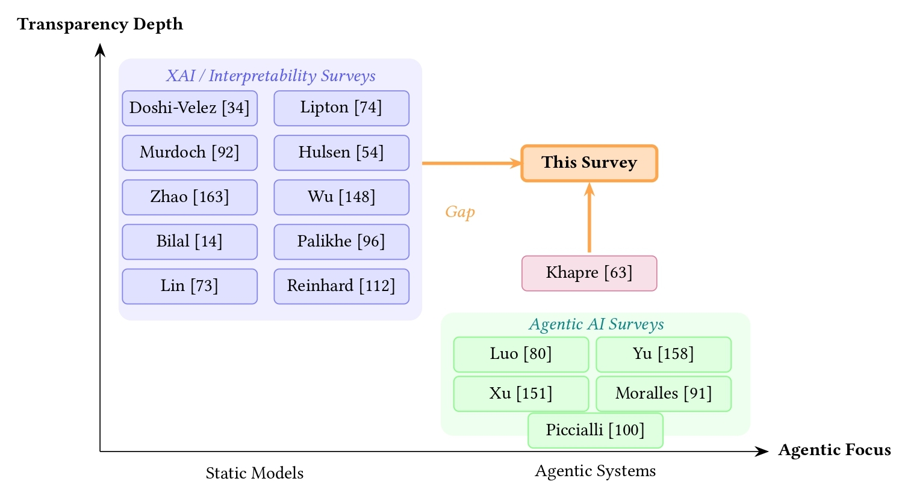
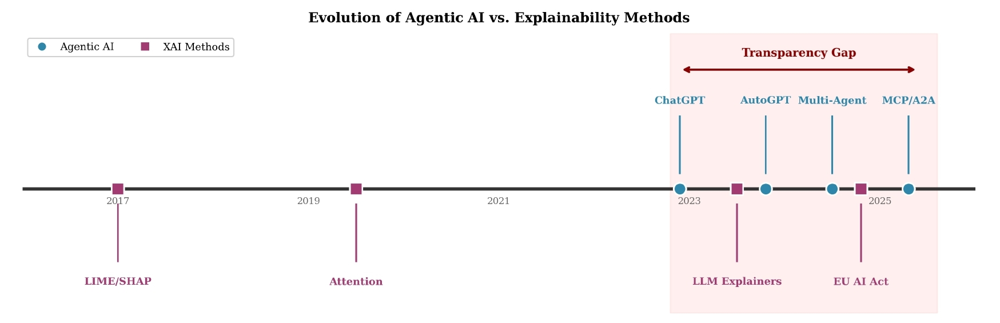
Five-axis taxonomy
We organize transparency along five complementary dimensions.
What
What should be transparent?
Why
Why is transparency required?
How
How is transparency achieved?
When
When is transparency required?
Who
Who requires transparency?
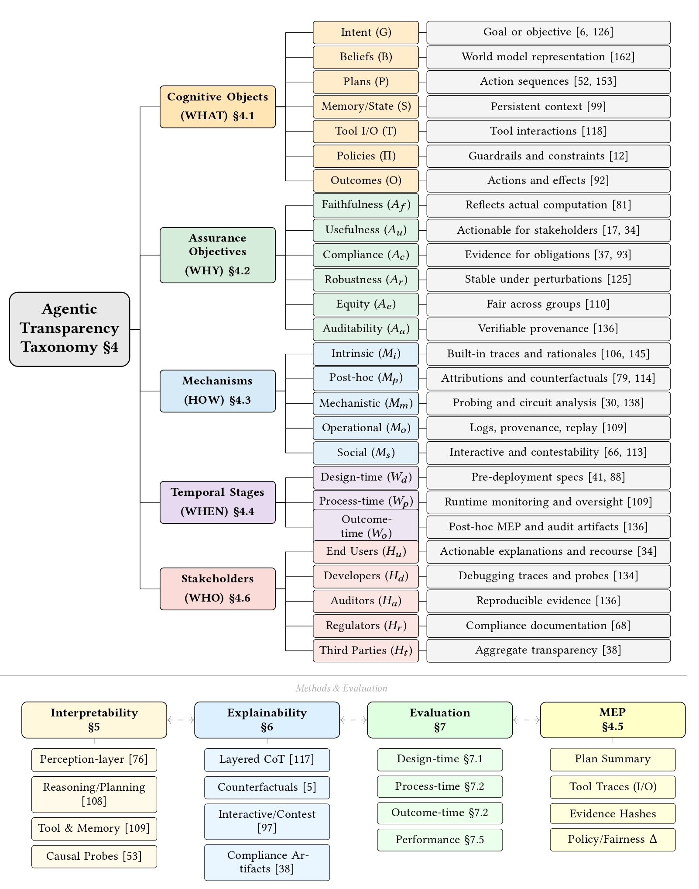
Minimal Explanation Packet
The MEP is a standardized record supporting multiple transparency objectives simultaneously.
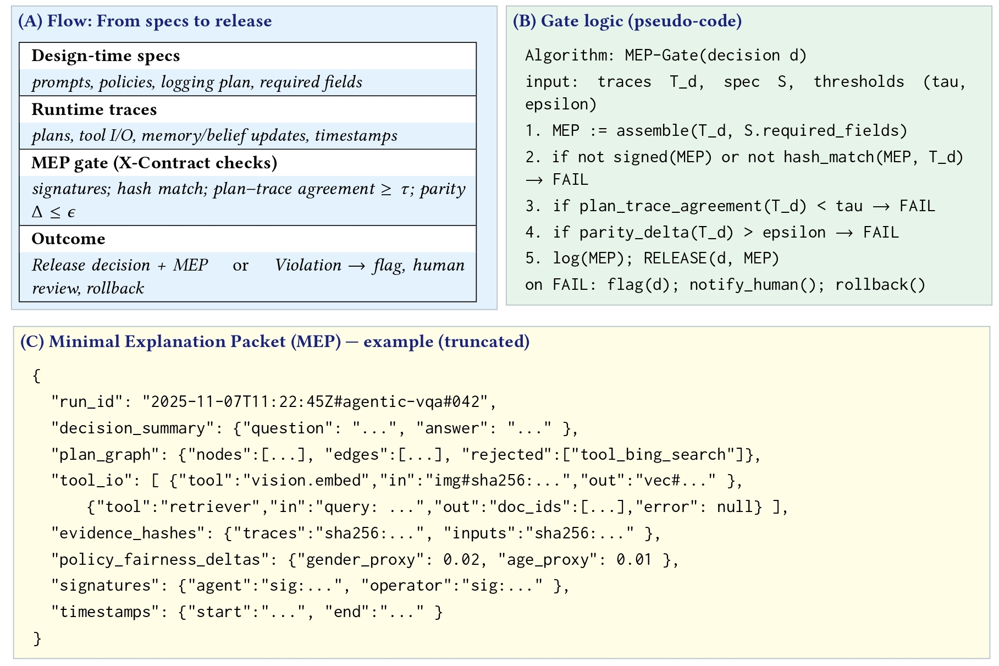
Key findings
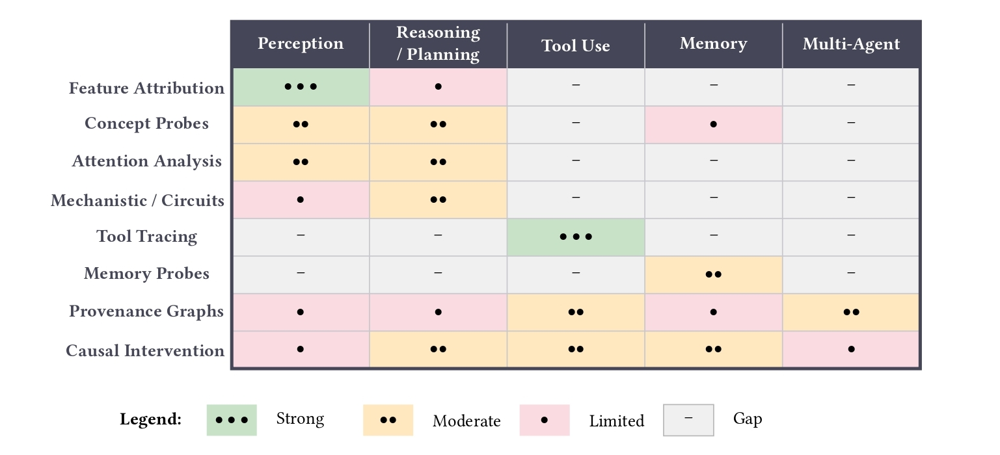
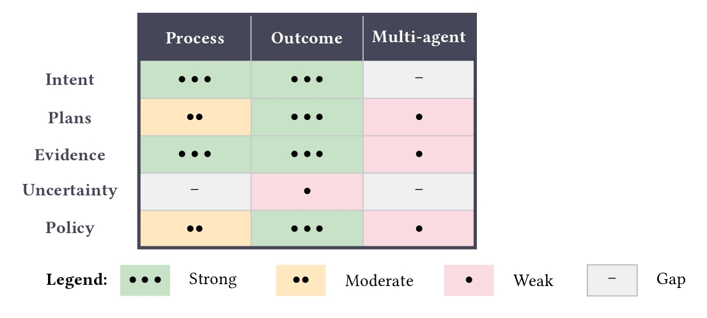
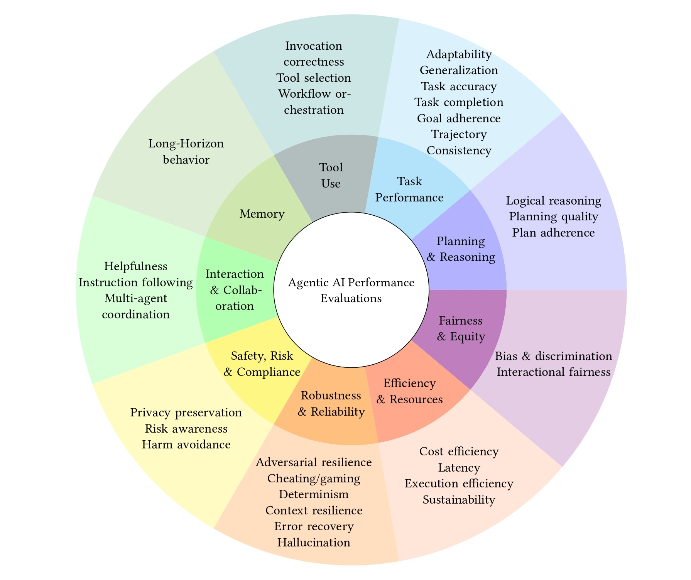
Contributions
Consolidating interpretability, XAI, and agentic systems monitoring across single-agent, multi-agent, and multimodal settings.
Systematic organization along WHAT, WHY, HOW, WHEN, and WHO dimensions for comparable analysis.
Mapping methods to governance frameworks and identifying critical research gaps.
Example
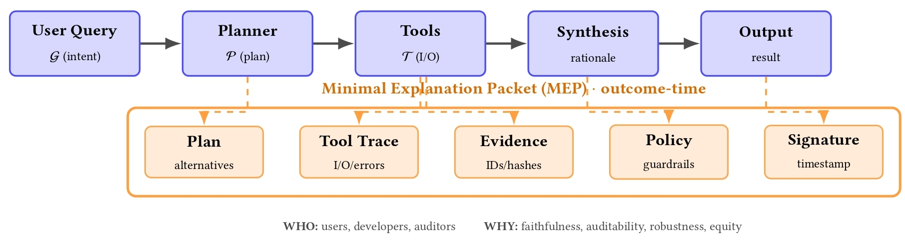
Citation
Raza, Radwan, Chaduvula, Alinoori, and Emmanouilidis, 2026.
@article{raza2026transparency,
title={Transparency in Agentic AI: A Survey of Interpretability, Explainability, and Governance},
author={Raza, Shaina and Radwan, Ahmed Y and Chaduvula, Sindhuja and Alinoori, Mahshid and Emmanouilidis, Christos},
year={2026}
}Acknowledgements
Resources used in preparing this research were provided, in part, by the Province of Ontario, the Government of Canada through CIFAR, and companies sponsoring Vector Institute. This research was funded by the European Union’s Horizon Europe research and innovation programme under the AIXPERT project (Grant Agreement No. 101214389), which aims to develop an agentic, multi-layered, GenAI-powered framework for creating explainable, accountable, and transparent AI systems.